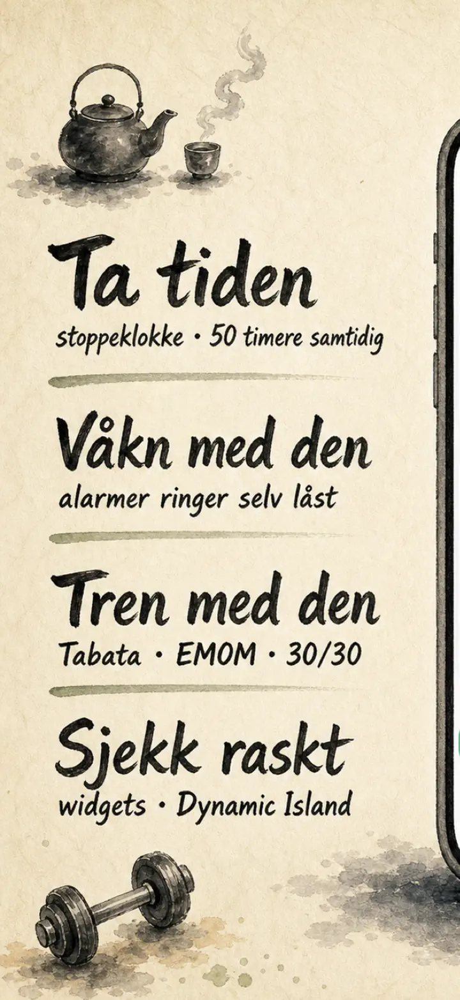
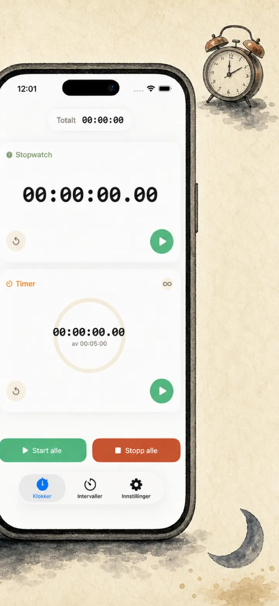
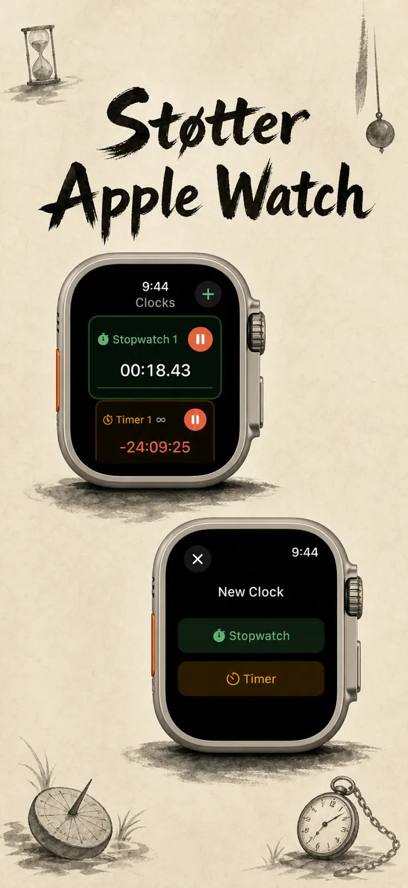
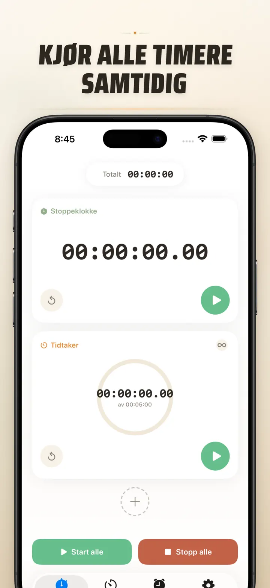
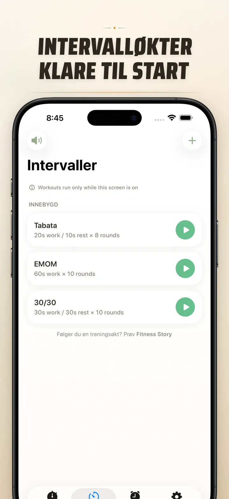
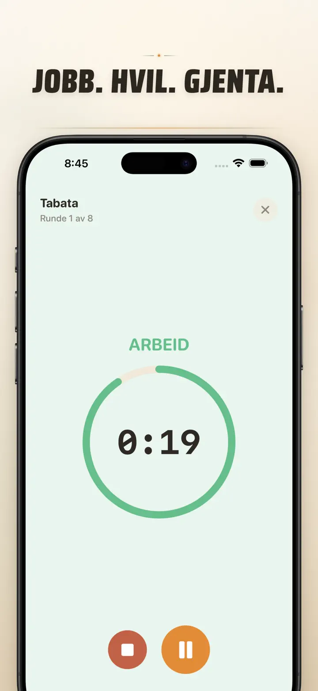
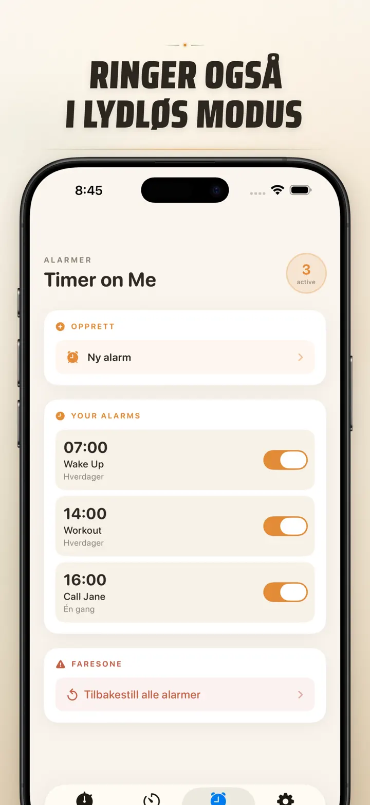

Timer on Me
Alarm, timer & stoppeklokke
Nå med datoalarmer: sett en engangsalarm for enhver fremtidig dato & tid, ved siden av tilbakevendende alarmer, 50 timere om gangen, HIIT & Tabata og Apple Watch.
Last ned i App Store
Om appen
Timer on Me er din multi-tidtaker og stoppeklokke for iPhone, iPad og Apple Watch. Opptil 50 uavhengige tidtakere samtidig, presise intervalløkter og alarmer som faktisk ringer — selv med låst iPhone eller lukket app.
ALARMER
- Vekke- og påminnelsesalarmer med egne etiketter og ukedagsplaner
- Drevet av AlarmKit — ringer selv når iPhone er låst eller Timer on Me er lukket
- Konfigurerbar slumring (3 / 5 / 9 / 15 / 30 minutter) eller ingen slumring
- Velg blant innebygde ringetoner eller importer egne lyder
- Slå på og av med ett trykk fra den dedikerte Alarm-fanen
TRENING OG INTERVALLER
- Ferdige Tabata-, EMOM- og 30/30-presets — to trykk og du er i gang
- Egen intervalleditor: arbeid, pause og runder i minutter og sekunder
- Fullskjerms treningsmodus med fargeskifte per fase og stille-alternativ
- Pause, hopp over og fortsett midt i økta uten å miste fremgang
APPLE WATCH
- Ekte nativ watchOS-app, ikke bare en speiling av telefonen
- Flere stoppeklokker og tidtakere på håndleddet samtidig
- Stoppeklokke med hundredels sekunds presisjon
- Egne urskive-komplikasjoner for ett-trykks start
- Fungerer alene, også uten iPhone i nærheten
50 TIDTAKERE SAMTIDIG
- Opptil 50 uavhengige tidtakere og stoppeklokker i samme økt
- Start, stopp og nullstill enkeltvis eller i grupper
- Auto-gjentagelse for sykliske runder
- Tidtakere teller videre etter null for å fange overtid
- Fargede fremdriftsindikatorer: gul ved 50 %, rød ved 10 %
- Dra for å sortere, gi dem egne navn
PÅLITELIGE VARSLER
- AlarmKit: alarmene ringer selv når iPhone er låst eller appen lukket
- Dynamic Island og Live Activity — fremgang på et blikk
- Hjem-widgets: liten, middels, stor
- Innebygde toner: bjeller, fuglesang, vintage-telefoner
- Trykk for å forhåndslytte før du velger
- «Hold skjerm våken»-modus for lange økter
TILPASS OG DEL
- Vis eller skjul desimaler, totaler og prosenter
- Lagre og overskriv presets, hent dem fram med ett trykk
- Eksporter som CSV, JSON eller ren tekst
- Del med kolleger, elever eller treneren din
FOR iPhone, iPad OG APPLE WATCH
- Oppsett som tilpasser seg alle skjermstørrelser
- Split View på iPad
- 34 språk
PERFEKT FOR
- HIIT, Tabata, CrossFit og sirkeltrening
- Bokseruner, kickboksing og kampsport
- Pomodoro, eksamenslesing og fokus
- Kaffebrygging, te, bløtkokte egg, brunost, vafler og ovnstid
- Yoga, pilates, meditasjon og pusteøvelser
- Generalprøver og instrumentøving
- Undervisning, workshops og gruppeaktiviteter
- Brettspill og hjemmekvelder
Last ned Timer on Me og ta kontroll over hvert minutt — på treningssenteret, på jobb eller hjemme.
Personvernerklæring: https://masawata.net/privacy-policy.html Bruksvilkår: https://www.apple.com/legal/internet-services/itunes/dev/stdeula/
Skjermbilder






Timer on Me
Nå med datoalarmer: sett en engangsalarm for enhver fremtidig dato & tid, ved siden av tilbakevendende alarmer, 50 timere om gangen, HIIT & Tabata og Apple Watch.
Last ned i App Store